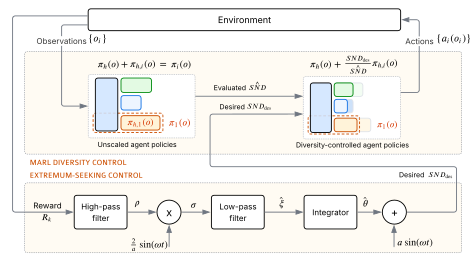
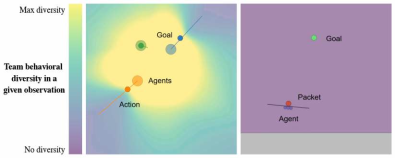
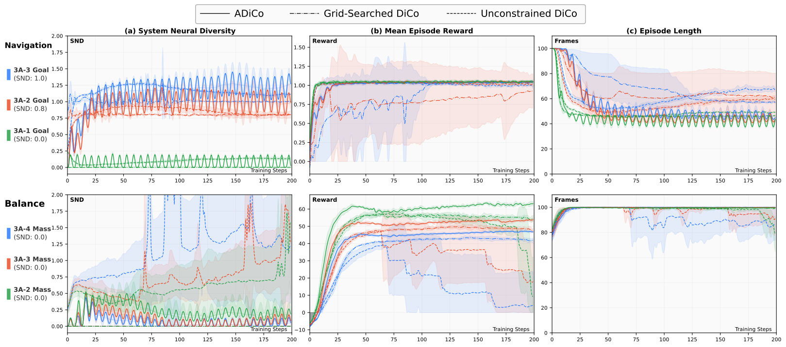
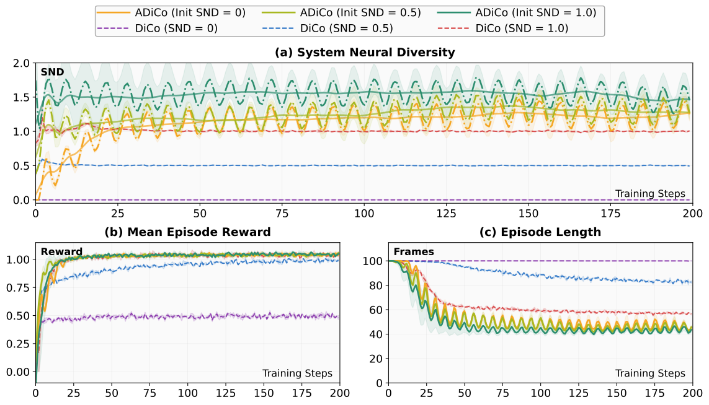
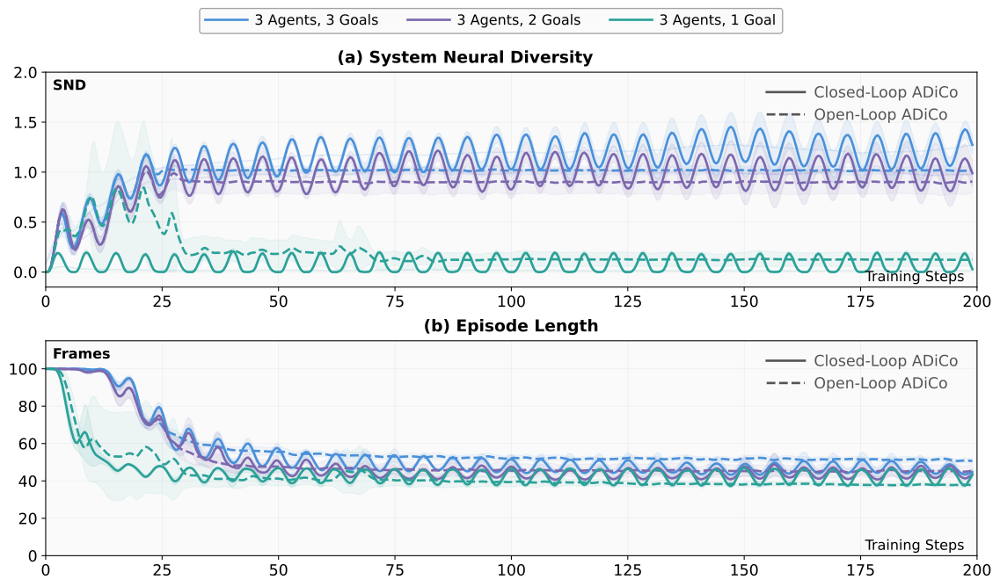

ADiCo - Adaptive Diversity Control
Optimizing Team Behavior via Extremum-seeking Control in Multi-agent Reinforcement Learning
01
How much behavioral diversity does a cooperative team need?
In cooperative multi-agent reinforcement learning, agents learn to work together toward a shared objective. However, sharing an objective does not mean that every agent should follow the same policy. Some tasks benefit from similar behaviors, while others require agents to specialize. The challenge is determining how much behavioral diversity helps the team accomplish its task.
Choosing this level is challenging because the relationship between diversity and team performance is generally unknown. Encouraging more diversity does not necessarily improve cooperation, and manually testing different targets requires repeated training runs.
Diversity target: 0
Diversity target: 1
This comparison raises a broader question: how should we choose the diversity target for a task we have not already tuned? A target that supports specialization in this Navigation task may be unnecessary or detrimental when agents benefit from similar behavior. Adaptive Diversity Control (ADiCo) addresses this selection problem using team-performance feedback during training. Diversity Control (DiCo) regulates diversity toward the current target, while Extremum Seeking Control (ESC) gradually adjusts that target to seek better team performance. This provides an alternative to manually comparing repeated training runs at different fixed targets.
02
How does ADiCo address the diversity-selection problem?
ADiCo combines Diversity Control (DiCo) and Extremum Seeking Control (ESC) through a two-timescale framework. On the faster timescale, DiCo regulates behavioral diversity while MARL trains the policies at a fixed diversity target. On the slower timescale, ESC updates that target after training and policy evaluation, before the next training cycle begins. Thus, target adaptation occurs between training cycles rather than during individual policy updates.

On the faster timescale, DiCo decomposes each agent’s policy into shared and agent-specific components. It maintains a smoothed estimate of the unscaled agent-specific components’ System Neural Diversity (SND), then rescales their contribution by the ratio of desired diversity to estimated diversity. This regulates policy diversity toward the current target while MARL updates the policies.
On the slower timescale, ESC uses mean episode reward from policy evaluation to assess the response to small sinusoidal perturbations of the diversity target. A high-pass filter removes slow variations, demodulation relates the remaining response to the perturbation, and a low-pass filter smooths the resulting gradient estimate. The integrator uses this estimate to adjust the nominal setpoint toward locally better performance. The next perturbation is then added to form the target held fixed throughout the following training cycle.
03
How do we evaluate ADiCo?
DiCo can be used with many multi-agent reinforcement learning algorithms, and ADiCo inherits this because ESC only adjusts the diversity target. In our experiments, we use Independent Proximal Policy Optimization (IPPO) in the Vectorized Multi-Agent Simulator (VMAS). Each run trains for 12 million frames and is repeated over five seeds. After every 60,000 frames, the policies are evaluated, and the mean episode reward drives one ESC target update.
ADiCo works with any number of agents, and we use three agents in both of our cooperative tasks. In Navigation, agents reach goal locations, and we use one to three goals to change how much the agents need to specialize. In Balance, agents push a shared platform to carry a load to a goal, and we use load masses of 2, 3, and 4 to make the task harder.

We compare ADiCo with Grid-Searched DiCo, which uses the best fixed target found by training one run per candidate, and Unconstrained DiCo, which lets diversity emerge freely. All methods share the same algorithm, network, and training budget. We report System Neural Diversity, mean episode reward, and episode length.
04
Does ADiCo find different diversity levels for different tasks?
ADiCo converges to task-specific diversity levels within a single training run, removing the need for a grid search over fixed targets.

In Navigation, the diversity selected by ADiCo increases with the number of goals, converging to SND of approximately 0, 1.0, and 1.2 for one, two, and three goals, respectively. In Balance, ADiCo maintains SND near zero across all load masses and achieves the highest reward. In contrast, Unconstrained DiCo lacks diversity regulation, allowing diversity to grow and performance to degrade in Balance.
ADiCo
Grid-Searched DiCo
Unconstrained DiCo
05
Does the initial diversity target matter?
ADiCo is robust to its initial diversity target. In Navigation with three agents and three goals, initial targets of 0, 0.5, and 1.0 converge to the same performance, whereas fixed-target DiCo depends strongly on the chosen value.

All ADiCo initializations converge to SND of approximately 1.2 to 1.5 and reach the same final reward. In contrast, the performance of fixed-target DiCo depends on the chosen value: with SND 0, reward plateaus at approximately half that of ADiCo, and with SND 0.5, learning is slower. ADiCo also completes episodes in fewer steps than DiCo at any fixed target.
06
Is continued adaptation useful after diversity settles?
We compare closed-loop ADiCo, where ESC runs throughout training, with open-loop ADiCo, where ESC shuts down once diversity settles and the target is held fixed. Continued adaptation yields shorter episodes, most clearly in the three-goal task.

Once the ESC is shut down, open-loop ADiCo holds a target close to the grid-searched values, while closed-loop ADiCo continues to oscillate around a slightly higher level. Closed-loop ADiCo also reaches shorter episodes in the three-goal task, at approximately 45 steps compared with 51, while differences in the one- and two-goal tasks are small. These results suggest that continued ESC perturbation may act as an implicit exploration mechanism that improves the policy after convergence.
07
What are the limitations and future directions?
The sinusoidal perturbation required by ESC introduces oscillations in diversity and performance, even after the optimal diversity range is reached. In addition, the gradient estimate scales with reward magnitude, so the integrator gain must be adjusted to the reward range of each task. More fundamentally, ADiCo selects a single scalar diversity target for the entire team and episode, without regard to the current state of the environment.
Future work will extend ADiCo from a single target to state-dependent diversity, in which the required diversity is expressed as a function of the environment state. Further directions include using ESC to tune pairwise diversity between individual agents, adapting the ESC perturbation amplitude, frequency, and gain during training, and evaluating ADiCo in more complex environments and on physical multi-robot systems.